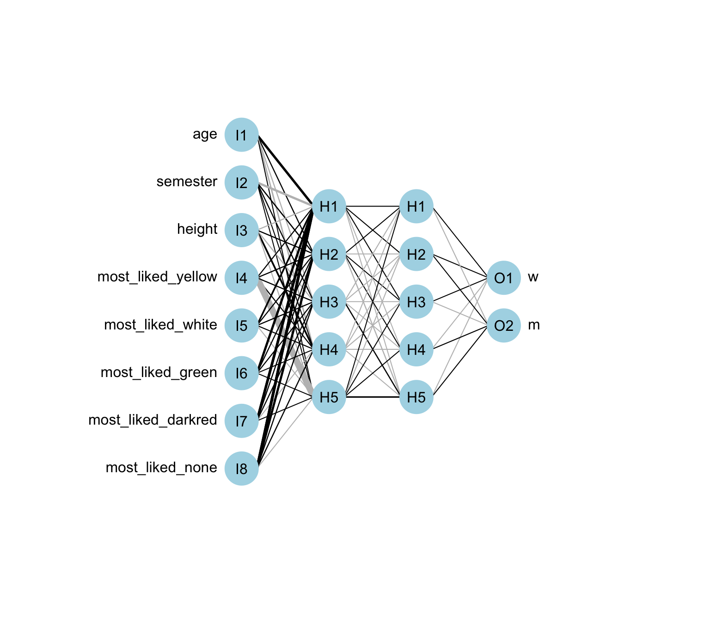
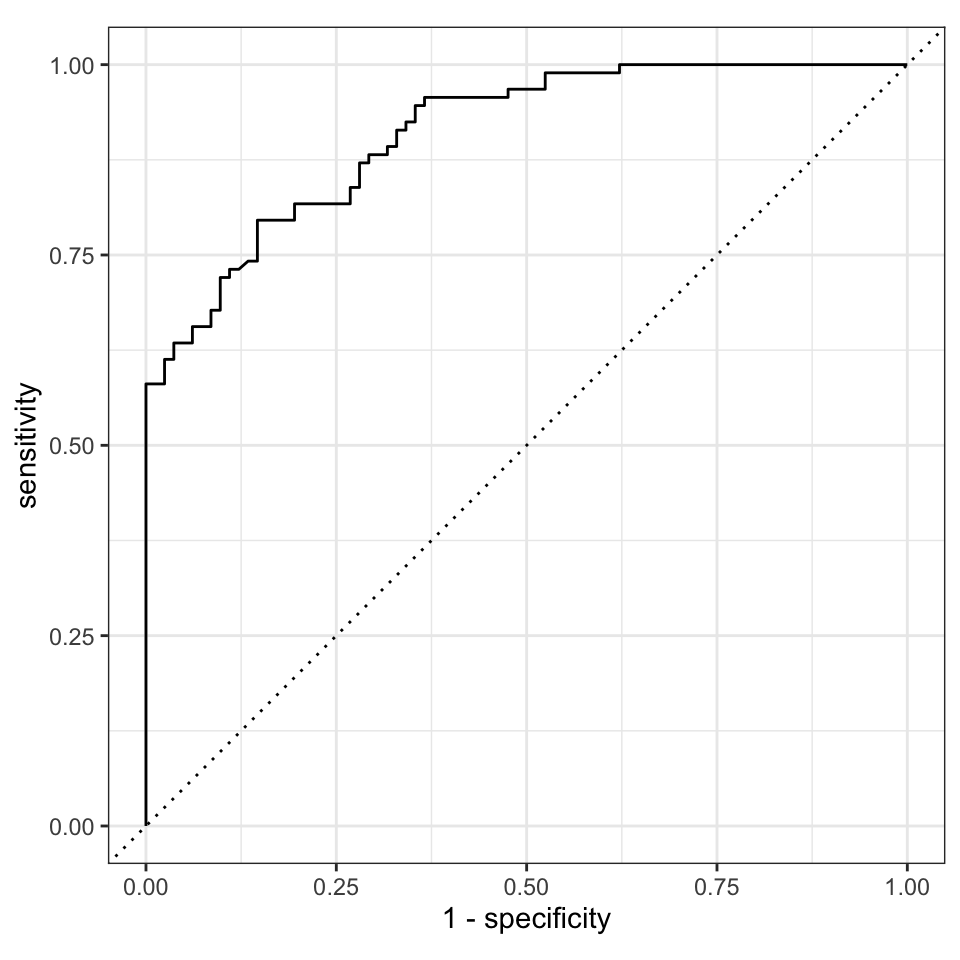

pacman::p_load(tidyverse, tidymodels, magrittr,
janitor, keras, tensorflow, see,
neuralnet, NeuralNetTools,
OneR, readxl,
conflicted)
conflict_prefer("select", "dplyr")
conflict_prefer("filter", "dplyr")
conflict_prefer("mutate", "dplyr")
conflict_prefer("extract", "magrittr")
##
set.seed(2025429)66 Neural networks
Letzte Änderung am 28. September 2023 um 14:30:44
So, das war ein ganz schönes Brett, TensorFlow bzw. Keras auf dem Rechner zu installieren. Es gibt zwar einen Quick start um Tensorflow zu installieren aber dann hatte ich das schöne Problem der GPU auf dem macOS mit M1 Chip. Die Lösung für die Local GPU hat mich auf dem macOS einen Tag Nerven gekostet. Das mag dann auf einem Windows Rechner anders sein bzw. andere Probleme verursachen. Schlussendlich ist die Nutzung von neural networks auf keinen Laptops vielleicht auch nicht so die beste Idee. Wir würden die Algorithmen eher auf Hochleistungsrechner durchführen und dann vermutlich eine Linuxdistribution verwenden. Dennoch werde ich hier einmal Tensorflow in R vorstellen. Die Pakete für die Integration von dem eigenständigen Algorithmus Tensorflow gibt es und wenn es dann mal installiert ist, funktioniert auch alles super. Da Tensorflow in Phyton programmiert ist, muss auch Phyton auf dem Rechner installiert sein. Du siehst also, es ist einiges einzurichten, damit wir Deep learning betreiben können. Hier möchte ich dann auch gerne auf Mueller und Massaron (2019) verweisen, der zu dem Thema Deep learning einen guten Einstieg liefert. Denn wir machen hier eigentlich kein Deep learning, denn unsere neuronalen Netzwerke werden nicht viele Schichten haben, dass würde hier mein kleiner Rechner auch gar nicht schaffen.
Neben TensorFlow / Keras zeige ich auch nochmal die Anwendung der etwas veralteten R Pakete neuralnet und nnet. Wie immer musst du selber entscheiden, was du brauchst. Der Vorteil des Paketes nnet ist, dass wir das Paket zum einen mit Rezepten und Tuning gut nutzen können. Zum anderen brauchen wir aber nicht diesen Installationsmarathon wie bei TensorFlow / Keras. Ich präsnetiere hier einfach die Auswahl und du schaust dann was passt.
Wir immer basiert dieser Text zum Teilen auch auf guten Tutorien im Netz. Zum einen ist es das Tutorium Understanding the Magic of Neural Networks und das Tutorium A Beginner’s Guide to Neural Networks and Deep Learning. Beide Tutorien sind in Englisch und Teile beider Tutorien hat auch diesen Text hier inspiriert. Nicht zu vergessen das Tutorium A Quick Introduction to Neural Networks.
66.1 Genutzte R Pakete
Wir wollen folgende R Pakete in diesem Kapitel nutzen.
Am Ende des Kapitels findest du nochmal den gesamten R Code in einem Rutsch zum selber durchführen oder aber kopieren.
66.2 Neuronale Netzwerke theoretisch
Neuronale Netze ordnen Inputs den Outputs zu. Wir haben also Eingaben und erhalten eine Ausgabe zurück. Neuronale Netze finden Korrelationen. Neuronale Netzwerke sin auch als “universeller Approximator” bekannt, weil dad Netzwerk lernen kann, eine unbekannte Funktion \(f(x) = y\) zwischen einer beliebigen Eingabe \(x\) und einer beliebigen Ausgabe \(y\) zu approximieren. Dabei gilt die Vorraussetzung, dass \(x\) und \(y\) in einem Zusammenhang durch Korrelation oder Kausalität stehen. Während des Lernprozesses findet ein neuronales Netz das richtige \(f()\) oder die richtige Art der Umwandlung von \(x\) in \(y\), sei es \(f(x) = 3x + 12\) oder \(g(f(x)) = 9x - 0.1\). Wie du sehen kannst, gibt es auch bei dem neuralen Netzwerk eigentlich um ein Modell. Und unser Modell ist nicht anders, als eine multiple lineare Regresion in der klassischen Statistik.
Deep Learning ist der Name, den wir für gestapelte neuronale Netze verwenden und damit meinen wir Netze, die aus mehreren Schichten bestehen. Die einzelnen Schichten bestehen aus Knotenpunkten. Ein Knoten ist einfach ein Ort, an dem Berechnungen stattfinden, frei nach dem Vorbild eines Neurons im menschlichen Gehirn, das feuert, wenn es auf ausreichende Reize trifft. Ein Knoten kombiniert Eingaben aus den Daten mit einer Reihe von Koeffizienten oder Gewichten, die diese Eingaben entweder verstärken oder abschwächen. Somit geben dann die Knoten den Eingaben eine Bedeutung im Hinblick auf die Aufgabe die der Algorithmus zu lernen versucht. Häufig ist dies die Aufgabe die Eingabe zu finden die am hilfreichsten die Daten fehlerfrei klassifiziert? Diese Eingangsgewichtungen werden summiert, und die Summe wird dann durch die so genannte Aktivierungsfunktion eines Knotens geleitet, um zu bestimmen, ob und in welchem Ausmaß dieses Signal weiter durch das Netzwerk geleitet werden soll. Am Ende kann nur ein weitergeleitetes Signal das Endergebnis als einen Klassifizierungsvorgang beeinflussen. Wenn das Signal durch das Neuron durchläuft, ist dieses Neuron “aktiviert” worden.
In Abbildung 66.5 ist ein Diagramm dargestellt, dass einen Knoten darstellt. Wir haben immer ein Inputlayer in dem wir hier drei Inputneuronen \(x_1\), \(x_2\) und \(x_3\) finden. Das sind auch unsere Variablen in den Daten, die wir in das Modell stecken. Ganz oben finden wir noch als blaues Neuron ein Biasneuron dargestellt. Du kannst dir das Biasneuron wie den Intercept in der linearen Regresion vorstellen. Jedes der Neuronen hat ein Gewicht \(w_0\) bis \(w_3\). Diese Gewichte werden durch eine Netzinputfunktion in der Form \(w_0 + w_1 x_1 + w_2x_3\) aufsummiert und dann an eine Aktivierungsfunktion weitergeleitet. Die Aktivierungsfunktion entscheidet hierbei, ob das Neuron aktiv wird und damit dann auch die Gewichte weiterleitet oder eben inaktiv wird. Es gibt viele Aktivierungsfunktionen, die alle unterschiedliche Eigenschaften haben. Im Folgenden sind einmal die wichtigisten Aktivierungsfunktionen beschrieben.
- Die lineare Aktivierungsfunktion skaliert eine Eingabe einfach um einen Faktor, was bedeutet, dass es eine lineare Beziehung zwischen den Eingaben und der Ausgabe gibt.
- Sigmoid-Aktivierungsfunktion ist “S”-förmig. Sie kann der Ausgabe Nichtlinearität hinzufügen und gibt einen binären Wert von 0 oder 1 zurück.
- Die Tanh-Aktivierungsfunktion ist eine Erweiterung der sigmoidalen Aktivierungsfunktion. Daher kann Tanh verwendet werden, um der Ausgabe Nichtlinearität hinzuzufügen. Die Ausgabe liegt im Bereich von -1 bis 1. Die Tanh-Funktion verschiebt das Ergebnis der sigmoiden Aktivierungsfunktion.
- Die Rektifizierte lineare Einheits-Aktivierungsfunktion (RELU) ist eine der am häufigsten verwendeten Aktivierungsfunktionen. RELU wird bevorzugt in den Hidden Layer verwendet. Das Konzept ist linear vom Nullpunkt ausgehend. Die RELU fügt der Ausgabe auch Nichtlinearität hinzu. Allerdings kann das Ergebnis von 0 bis unendlich reichen.
- Die Softmax-Aktivierungsfunktion ist eine Erweiterung der Sigmoid-Aktivierungsfunktion. Die Softmax-Funktion fügt der Ausgabe eine Nichtlinearität hinzu. Sie wird jedoch hauptsächlich für Klassifizierungen verwendet, bei denen mehrere Klassen von Ergebnissen berechnet werden können. Wir haben dann einen Multiclass-Fall vorliegen.
Im Prinzip ist eine Aktivierungsfunktion nichts anderes als die Link Funktion in der multiplen linearen Regression. Aber das geht dann hier zu weit. Häufig wird dann die Netzinputfunktion und die Aktivierungsfunktion in einem Knotenpunkt dargestellt.
Mehr über Aktivierungsfunktionen kannst du im Tutorium Neural Networks In a Nutshell erfahren.

In der Abbildung 66.2 sehen wir dann ein ganze Netz an Neuronen. Wir haben ein Inputlayer und mehrere Hiddenlayer die am Ende dann in ein Outputlayer enden. Meistens wollen wir eine binäre Klassifikation rechnen, so dass am Ende dann zwi Outputknoten stehen. Die Hiddenlayer können unterschiedlich viele Knoten enthalten und meistens gibt es auch mehrere Abstufungen. Das heißt wir fnagen mit mehreren Knoten pro Hiddenlayer an und reduzieren dann die Anzahl der Knoten pro Hiddenlayer über die Breite des neuronalen Netzwerkes.
Spannenderweise sind viele Dinge in einem neuronalen Netzwerk nichts anderes als eine intelligente Hintereinanderschaltung von multiple linearen Regressionen Deshalb gibt es in der Tabelle 66.1 auch einmal eine Übersicht der Begriffe in dem Sprachraum der neuronalen Netze und der klassischen logistischen Regression. Wir sehen hier einiges an gleichen Konzepten.
| Neural network | Logistic regression (eng.) | Logistische Regression (deu.) |
|---|---|---|
| Activation function | Link function | Link Funktion |
| Weights | Coefficients / Slope | Koeffizienten / Steigung |
| Bias | Intercept | Intercept |
| Variance | Residuals | Fehler / Residuen |
| Learning | Fitting | Modellieren |
Wenn ein neuronales Netz auf dem Trainingssatz trainiert wird, wird es mit einer Reihe von Gewichten initialisiert. Diese Gewichte werden dann während der Trainingsperiode optimiert und die optimalen Gewichte werden erzeugt. Das ist ein wichtiger Punkt. Wir erzeugen zufällig die Gewichte am Anfang und lassen uns dann die Gewichte mehr oder minder zufällig weiteroptimieren. Sonst würden ja bei jedem Knoten die gleichen Zahlen rauskommen. Wir optimieren aber nicht nur einmal sondern meistens mehrfach. Das heißt wir lassen das neuronale Netzwerk mehrfach wachsen und optimieren bei jedem Wachstum die Gewicte so, dass der Fehler geringer wird.
Die Epoche (eng. epoch) ist einer der Eingabeparameter des Algorithmus. Stelle dir die Epoche als eine Schleife vor. Die Schleife bestimmt, wie oft ein Lernalgorithmus die Gewichte aktualisiert. Wenn der Wert der Epoche 1 ist, bedeutet dies, dass das neuronale Netz einmal läuft um die Gewichte zu aktualisieren. Wenn die Epoche einen Wert von 5 hat, wird das neuronale Netzwerk fünfmal aktualisiert. Hier ist der Unterschied zu den Entscheidungsbäumen auffällig. Entscheidungsbäume werden in einem Random Forest gemittelt. Die Epochen eines neuronalen Netzwerkes hängen aber miteinander zusammen.
Ein neuronales Netz ist eine korrigierende Rückkopplungsschleife, die Gewichte belohnt, die seine korrekten Vermutungen unterstützen, und Gewichte bestraft, die es zu Fehlern verleiten.
Damit wir wissen, ob unser Netzwerk über die Epochen besser wird, brauchen wir eine Verlustfunktion (eng. loss function). Die Verlustfunktion wird auch als Kostenfunktion (eng. cost function) bezeichnet. Sie errechnet den Fehler. Um genau zu sein, ist die Kostenfunktion der Durchschnitt der Verlustfunktionen. Dies ist die Funktion, die der Optimierungsalgorithmus zu minimieren versucht. Es gibt eine große Anzahl von Verlustfunktionen, wie den mittleren quadratischen Fehler oder die binäre Kreuzentropie.
Die Verlustfunktion sagt dem neuronalen Netz im Wesentlichen, welche Maßnahmen es ergreifen muss, um die Accuracy zu verbessern. Diese Information wird dann verwendet, um genaueren Gewichte zu erzeugen. Danach kann dann das neuronale Netz kann die Daten erneut weiterverarbeiten.
Am Rande möchte ich noch die Begriffe Forward Propagation und Back Propagation erwähnen. Beide Begriffe beschreiben, wie das Lernen innerhalb eines neuronalen Netzwerk abläuft. Klassisch ist die Forward Propagation. Dabei reicht ein Knoten die Informationen an den nächsten Knoten weiter. Das Lernen erfolgt vorwärts. Die andere Möglichkeit ist, das Netzwerk wachsen zu lassen und dann rückwärts die Gewichte der Knoten zu verbessern. Wir haben dann eine Back Propagation vorliegen.
66.3 Neuronales Netz anschaulicher
In unserem folgenden Beispiel ist Rotkäppchen das neuronale Netz. Rotkäppchen hat folgende Informationen zu drei möglichen Outcomes vorliegen. Rotkäppchen weiß also, dass es im Wald oder im Haus drei Personen treffen kann. Entweder trifft sie die Großmutter, den großen, bösen Wolf oder den Holzfäller. Gott sei Dank kennt Rotkäppchen die Eigenschaften der drei Charaktere und kann daran sich folgende Matrix aufbauen. Wir lesen die Tabelle wie folgt, wir haben die Spalte grosse_ohren und wir haben drei Werte mit der Spalte assoziiert. Wir wissen aber nicht welche Zeile welcher Charakter ist. Wir wollen die Zuordnung einmal mit dem neuronalen Netzwerk durchführen.
little_red_tbl <- tibble(grosse_ohren = c(1, 0, 1),
grosse_augen = c(1, 1, 0),
grosse_zaehne = c(1, 0, 0) ,
freundlich = c(0, 1, 1),
faltig = c(0, 1, 0),
gutaussehend = c(0, 0, 1),
renn_weg = c(1, 0, 0),
schrei = c(1, 0, 0),
ruf_holzfaeller = c(1, 0, 0),
plaudere = c(0, 1, 1),
geh_hin = c(0, 1, 0),
biete_essen = c(0, 1, 1),
rettung = c(0, 0, 1))In der Tabelle 66.2 sehen wir die Daten nbochmal in das Input Layer und das Output Layer aufgespaltet. Die Frage ist, was soll Rotkäppchen tun, wenn die die Eigenschaften des Input Layers beobachtet? Wir wollen jetzt anhand eines neuronalen Netzes die Input Layer dem Output Layer zuordnen.
Tabelle 66.2— Die beiden Datensätze für das neuronale Netzwerk. Wie lässt sich der Input sinnvoll mit dem Output verbinden? Wir geben dafür drei Hidden Layers vor, die dann die Charaktere Wolf, Goßmutter und den Holzfäller repräsentieren.
| grosse_ohren | 1 | 0 | 1 |
| grosse_augen | 1 | 1 | 0 |
| grosse_zaehne | 1 | 0 | 0 |
| freundlich | 0 | 1 | 1 |
| faltig | 0 | 1 | 0 |
| gutaussehend | 0 | 0 | 1 |
| renn_weg | 1 | 0 | 0 |
| schrei | 1 | 0 | 0 |
| ruf_holzfaeller | 1 | 0 | 0 |
| plaudere | 0 | 1 | 1 |
| geh_hin | 0 | 1 | 0 |
| biete_essen | 0 | 1 | 1 |
| rettung | 0 | 0 | 1 |
Im Folgenden siehst du einmal den Code für das simple neuronale Netzwerk. Wir haben die Spalten des Input Layer durch das ~ von den Spalten des Output Layers getrennt. Darüber hinaus wollen wir noch drei Hidden Layer Knoten haben. Jeweils einen Knoten für jeden unserer drei Charaktere.
neuralnetwork <- neuralnet(renn_weg + schrei + ruf_holzfaeller + plaudere +
geh_hin + biete_essen + rettung ~
grosse_ohren + grosse_augen + grosse_zaehne +
freundlich + faltig + gutaussehend,
data = little_red_tbl, hidden = 3,
exclude = c(1, 8, 15, 22, 26, 30, 34, 38, 42, 46),
lifesign = "none", linear.output = FALSE)In Abbildung 66.3 sehen wir das neuronale Netzwerk einmal abgebildet. Da wir uns so ein simples Beispiel ausgedacht haben, können wir das Beispiel hier auch einmal visualisieren. Wir sehen hier nochmal auf der linken Seite das Input Layer und auf der rechten Seite das Output Layer. Die schwarzen, dicken Linien stellen die bedeutenden Gewichte dar. Wir sehen also, dass grosse_ohren, grosse_augen und grosse_zaehne mit dem Hidden Layer H3 verbunden sind. Von dem Hidden Layer H3 gehen dann die Linien zu renn_weg, schrei und ruf_holzfaeller. Wir sehen daran, dass das neuronale Netzwerk in H3 den großen, bösen Wolf erkannt hat. Da wir jetzt sehen, dass H1 hauptsächlich faltig ist, können wir hier auf die Repräsentation der Großmutter schließen. Ebenso ist H2 gutaussehend, so dass wir hierauf die Repräsenrtation des Holzfällers schließen können. Die Zuordnungen des Output Layers passen dementsprechend dann auch.
plotnet(neuralnetwork, bias = FALSE, pad_x = 0.73)
66.4 Neuronales Netz mathematischer
Das folgende etwas mathematische Beispiel ist von Kubat (2017), pp. 65-73, entnommen. Ich habe das Beispiel dann für R adaptiert, so dass wir hier auch R Code zum ausprobieren haben. Bevor wir damit anfangen, hier nochmal auf einfache Weise erklärt, was beim Lernen mit einem neuronalen Netzwerk geschieht.
Eingaben werden als Inputs in das Netz eingegeben. Die Koeffizienten bzw. Gewichte ordnen diese Eingabe einer Reihe von Vermutungen zu, die das Netz am Ende anstellt. Hierbei erfolgt die Zuornung mehr oder minder zufällig. Wir beginnen ja auch mit einem Satz an zufällig ausgewählten Gewichten, die wir dann innerhalb des neuronalen Netzwerks optimieren wollen.
\[ Eingabe * Gewichtung = Vermutung \]
\[ input * weight = guess \]
Die gewichtete Eingabe führt zu einer Vermutung darüber, was die Eingabe ist. Das neuronale Netz vergleicht dann seine Vermutung mit einer Wahrheit über die Daten und berechnet daraus einen Fehler. Wir wissen, dass wir zehn kranke und acht gesunde Ferkel in dem Datensatz haben, wie viele kann das neuronale Netzwerk anhand der Gewichte und dem Input richtig zuordnen oder eben falsch zuordnen?
\[ Wahrheit - Vermutung = Fehler \]
\[ truth - guess = error \]
Die Differenz zwischen der Schätzung des neuronalen Netzes und der Wahrheit ist der Fehler. Das Netzwerk misst diesen Fehler und minimiert den Fehler über das Modell, indem es die Gewichte in dem Maße anpasst, wie sie zum Fehler beigetragen haben.
\[ Fehler * Beitrag\; des\; Gewichts\; zum\; Fehler = Anpassung \]
\[ error * weight's\; contribution\; to\; error = adjustment \]
Die drei obigen Formeln beschreiben die drei Hauptfunktionen neuronaler Netze: Bewertung der Eingaben, Berechnung des Verlusts und Aktualisierung des Modells, um den dreistufigen Prozess von vorne zu beginnen. Ein neuronales Netz ist eine korrigierende Rückkopplungsschleife, die Gewichte belohnt, die seine korrekten Vermutungen unterstützen, und Gewichte bestraft, die es zu Fehlern verleiten.
Das Buch An Introduction to Machine Learning kannst du dir an der HS Osnabrück als PDF über die Hochschule runterladen.
Betrachten wir also einmal ein simples Datenbeispiel von vier Beobachtungen mit jeweils einem \(x_1\) und einem \(x_2\) Wert als Prädiktor. Der Wert den \(x_1\) oder \(x_2\) annehmen können sind binär. Wir haben also für unsere beiden Prädiktoren nur \(0/1\) Werte vorliegen. Unser Label \(y\) ist ebenfalls binär. Entweder ist die betreffende Beobachtung erkrankt oder eben nicht. In unserem Beispiel sind die ersten beiden Beobachtungen nicht erkrankt und die letzten beiden Beobachtungen sind erkrankt. Schauen wir uns den Datensatz einmal an.
data_tbl <- tibble(y = c(0, 0, 1, 1),
x_1 = c(0, 1, 0, 1),
x_2 = c(0, 0, 1, 1))
data_tbl# A tibble: 4 × 3
y x_1 x_2
<dbl> <dbl> <dbl>
1 0 0 0
2 0 1 0
3 1 0 1
4 1 1 1Faktisch wollen wir jetzt eine Grade durch die Punkte legen, so dass wir die gesunden von den kranken Beobachtungen trennen können. Praktisch machen wir das mit einer linearen Funktion \(h(x)\), die uns anhand von \(x_1\) und \(x_2\) eine Aussagen über den Status von \(y\) ermöglicht. Wir erhalten zuerst einen numerischen Wert, den wir dann noch mit einer Regel in eine \(0/1\) Entscheidung umwandeln müssen.
\[ h(x) \sim w_0 + w_1 \cdot x_1 + w_2 \cdot x_2 \]
Nun können wir die Formel nochmal kompakter schreiben.
\[ h(x) \sim \sum_{i = 0}^{n=2} w_i x_i \]
Wir drücken im Folgenden damit aus, das wir auch die Gewichte \(w_i\) mit den einzelnen \(x_i\) multiplizieren und anschließend aufsummieren. Anhand der aufsummierten Zahl aus \(h(x)\) können wir dann eine Entscheidung für \(0/1\) treffen. In unserem Beispiel entscheiden wir uns dazu, das wir \(y=0\) annehmen wenn \(h(x) < 0\) ist oder aber \(y=1\) annehmen, wenn \(h(x) \geq 0\) ist. Wir können das einmal formal aufschreiben.
\[ h(x)= \begin{cases} 1,& \text{wenn } h(x)\geq 0\\ 0, & \text{ansonsten} \end{cases} \]
Nichts anders ist dann auch unser Neuron, was die Entscheidungen trifft. Wir haben vier verschiedene \(x_1\) und \(x_2\) Kombinationen und gewichten diese beiden \(x\) dann noch einem Gewichtsvektor. Wenn wir dann als aufsummiertes Ergebnis eine Zahl größer als \(0\) erhalten, dann gibt unser Neuron als Klassifikationsergebnis ein \(1\) wieder.
neuron <- function(input, weights) {ifelse(input %*% weights > 0, 1, 0)}Wir brauchen also zum einen die Inputmatrix. Die bauen wir uns einmal mit der Funktion model.matrix(). Dann haben wir drei Spalten für jedes Gewicht \(w\). Dann brauchen wir noch die drei Gewichte \(w_0\), \(w_1\) und \(w_2\). Nichts anders als der Intercept und die Steigung in einem linearen Modell.
input <- data_tbl %$%
model.matrix(~ x_1 + x_2)
input (Intercept) x_1 x_2
1 1 0 0
2 1 1 0
3 1 0 1
4 1 1 1
attr(,"assign")
[1] 0 1 2Wir wählen zufällig drei Gewichte aus, die wir dann in unser Modell geben. Die Gwichte werden dann innerhalb des neuronalen Netzwerks dann optimiert. Die Wahl der passenden Gewichte ist dann noch eine Frage für sich, aber hier haben wir diese drei Werte ausgewählt.
weights <- c(0.1, 0.3, 0.4)Dann brauchen wir noch ein \(\eta\), dass beschreibt, um wie viel wir die Gewichte pro Runde der Optimierung verändern wollen. Wir wählen hier einen Wert von \(0.2\). Je kleiner der Wert, desto länger braucht das neuronale Netzwerk um ein Optimum zu finden. Pro Schritt können ja die Gewichte nur wenig geändertw werden. Ist das \(\eta\) zu groß dann sind die Änderungen der Gewichte auch groß und es kann sein, dass das neuronale Netzwerk gar keine optimalen Gewichte findet. Die Auflösung ist einfach nicht gering genug.
eta <- 0.2Jetzt laufen wir einmal durch vier Epochen. In jeder Epoche werden wir unser Gewicht dann wieder optimieren und dann mit den optimierten Gewichten weiter rechnen. Wir lassen uns aber in jeder Schleife einmal die Gewichte ausgeben.
for(i in 1:4){
adjust <- (data_tbl$y[i] - neuron(weights, input[i,])) * input[i,]
weights <- weights + eta * adjust
cat("Adjust: ", adjust, "\n")
cat("Weights: ", weights, "\n")
}Adjust: -1 0 0
Weights: -0.1 0.3 0.4
Adjust: -1 -1 0
Weights: -0.3 0.1 0.4
Adjust: 0 0 0
Weights: -0.3 0.1 0.4
Adjust: 0 0 0
Weights: -0.3 0.1 0.4 Die Gewichte ändern sich in jedem Schritt um den Wert von \(0.2\). Mehr geht auch nicht, denn wir geben mit \(\eta\) vor, um wieviel sich die Gewichte erhöhen oder erniedrigen können. Im ersten Schritt reduzieren wir das erste Gewicht um den Wert von \(\eta\). Im zweiten Schritt reduzieren wir erneut das erste Gewicht und darüber hinaus auch noch das zweite Gewicht. Wir sind dann schon am Optimum, denn wir erhalten keine weiteren Anpassungen mehr. Vermutlich können wir schon am zweiten Schritt das Outcome perfekt auftrennen.
Schauen wir einmal was passiert, wenn wir unser input mit den Gewichten aus unserem simplen Algorithmus multiplizieren.
input %*% c(-0.3, 0.1, 0.4) [,1]
1 -0.3
2 -0.2
3 0.1
4 0.2Unsere ersten zwei Beobachtungen erhalten einen negativen Wert und unsere letzten beiden Beobachtungen einen positiven Wert. Nach unserer Regeln werden Zahlen kleiner als Null zu \(0\) und Zahlen größer als Null zu \(1\). Da wir die Regel auch in dem Neuron abgespeichert haben, können wir uns einmal das Outcome mit den Input und den berechnete Gewichten wiedergeben lassen.
neuron(input, weights = c(-0.3, 0.1, 0.4)) [,1]
1 0
2 0
3 1
4 1Wir erhalten eine perfekte Übereinstimmung von der Vorhersage mit unseren Trainingsdaten. Der Algorithmus ist in der Lage mit der Regel in dem Neuron und den berechneten Gewichten unser Outcome korrekt mit den Trainingsdaten vorherzusagen.
66.5 Daten
In Folgenden wollen wir uns aber mal auf einen echten Datensatz konzentrieren. Wir nutzen daher einmal den Gummibärchendatensatz. Als unser Label und daher als unser Outcome nehmen wir das Geschlecht gender. Dabei wollen wir dann die weiblichen Studierenden vorhersagen. Im Weiteren nehmen wir nur die Spalte Geschlecht sowie als Prädiktoren die Spalten most_liked, age, semester, und height.
gummi_tbl <- read_excel("data/gummibears.xlsx") %>%
mutate(gender = as_factor(gender),
most_liked = as_factor(most_liked)) %>%
select(gender, most_liked, age, semester, height) %>%
drop_na(gender)Wir dürfen keine fehlenden Werte in den Daten haben. Wir können für die Prädiktoren später die fehlenden Werte imputieren. Aber wir können keine Labels imputieren. Daher entfernen wir alle Beobachtungen, die ein NA in der Variable gender haben. Wir haben dann insgesamt \(n = 548\) Beobachtungen vorliegen. In Tabelle 61.5 sehen wir nochmal die Auswahl des Datensatzes in gekürzter Form.
| gender | most_liked | age | semester | height |
|---|---|---|---|---|
| m | lightred | 35 | 10 | 193 |
| w | yellow | 21 | 6 | 159 |
| w | white | 21 | 6 | 159 |
| w | white | 36 | 10 | 180 |
| m | white | 22 | 3 | 180 |
| m | white | NA | NA | NA |
| … | … | … | … | … |
| w | darkred | 20 | 1 | 173 |
| w | white | 22 | 1 | 175 |
| w | darkred | NA | 1 | NA |
| m | white | 21 | 1 | 192 |
| m | darkred | 22 | 1 | 183 |
| w | green | 23 | 1 | 162 |
Unsere Fragestellung ist damit, können wir anhand unserer Prädiktoren männliche von weiblichen Studierenden unterscheiden und damit auch klassifizieren? Um die Klassifikation mit Entscheidungsbäumen rechnen zu können brauchen wir wie bei allen anderen Algorithmen auch einen Trainings- und Testdatensatz. Wir splitten dafür unsere Daten in einer 3 zu 4 Verhältnis in einen Traingsdatensatz sowie einen Testdatensatz auf. Der Traingsdatensatz ist dabei immer der größere Datensatz. Da wir aktuell nicht so viele Beobachtungen in dem Gummibärchendatensatz haben, möchte ich mindestens 100 Beobachtungen in den Testdaten. Deshalb kommt mir der 3:4 Split sehr entgegen.
gummi_data_split <- initial_split(gummi_tbl, prop = 3/4)Wir speichern uns jetzt den Trainings- und Testdatensatz jeweils separat ab. Die weiteren Modellschritte laufen alle auf dem Traingsdatensatz, wie nutzen dann erst ganz zum Schluss einmal den Testdatensatz um zu schauen, wie gut unsere trainiertes Modell auf den neuen Testdaten funktioniert.
gummi_train_data <- training(gummi_data_split)
gummi_test_data <- testing(gummi_data_split)Nachdem wir die Daten vorbereitet haben, müssen wir noch das Rezept mit den Vorverabreitungsschritten definieren. Wir schreiben, dass wir das Geschlecht gender als unser Label haben wollen. Daneben nehmen wir alle anderen Spalten als Prädiktoren mit in unser Modell, das machen wir dann mit dem . Symbol. Da wir noch fehlende Werte in unseren Prädiktoren haben, imputieren wir noch die numerischen Variablen mit der Mittelwertsimputation und die nominalen fehlenden Werte mit Entscheidungsbäumen. Dann müssen wir noch alle numerischen Variablen normalisieren und alle nominalen Variablen dummykodieren. Am Ende werde ich nochmal alle Variablen entfernen, sollte die Varianz in einer Variable nahe der Null sein.
gummi_rec <- recipe(gender ~ ., data = gummi_train_data) %>%
step_impute_mean(all_numeric_predictors()) %>%
step_impute_bag(all_nominal_predictors()) %>%
step_range(all_numeric_predictors(), min = 0, max = 1) %>%
step_dummy(all_nominal_predictors()) %>%
step_nzv(all_predictors())
gummi_rec %>% summary()# A tibble: 5 × 4
variable type role source
<chr> <list> <chr> <chr>
1 most_liked <chr [3]> predictor original
2 age <chr [2]> predictor original
3 semester <chr [2]> predictor original
4 height <chr [2]> predictor original
5 gender <chr [3]> outcome originalAlles in allem haben wir ein sehr kleines Modell. Wir haben ja nur ein Outcome und vier Prädiktoren. Trotzdem sollte dieser Datensatz reichen um zu erklären wie Keras oder Tensorflow funktionieren. Am Ende muss man sich aber auch ehrlich machen und sagen, dass ein Datensatz mit unter tausend Beobachtungen eigentlich keinen großen Sinn für ein neuronales Netz macht. Deshalb ist das hier eher eine Demonstration des Algorithmus.
66.6 Neuronale Netze mit neuralnet
Neuronale Netze mit den R Paketen neuralnet und dem R Paket nnet sind mehr oder minder veraltet (eng. outdated). Wir können das Paket neuralnet nicht über die parsnip Umgebung nutzen. Deshalb hier einmal zu Fuß mit all den Komplikationen, die das so mit sich bringt. Auf der anderen Seite liefert das Paket neuralnet auch gute Ergebnisse mit wenig rechenlaufzeit. Da musst du dann einmal abwägen, was du in deiner Arbei so brauchst.
Das die Funktion neuralnet() nicht mit den Workflow kann, müssen wir uns erstmal wieder den Traingsdatendatz und den Testdatensatz aus unserem Rezept extrahieren. Den Traingsdatensatz können wir uns über die Funktion juice() einmal aus dem Rezept ziehen.
gummi_train_tbl <- gummi_rec %>%
prep %>%
juice()Den Testdatensatz müssen wir mit dem Rezept einmal backen. Dann müssen wir noch die Spalte gender in eine numerische Spalte umwandeln. Sonst klappt das später nicht mit der Prädiktion und der Konfusionsmatrix.
gummi_test_tbl <- gummi_rec %>%
prep %>%
bake(gummi_test_data) %>%
mutate(gender = as_factor(ifelse(gender == "m", 0, 1)))Dann können wir auch schon die Funktion neuralnet auf unsere Daten anwenden. Wir wollen fünfmal über die Traingsdaten iterieren (rep = 5). Später heißt dieses Iterieren dann auch epoch. Dann müssen wir noch den Threshold für den Fehler festlegen, der gerade noch so akzeptabel ist und wo das Wachstum endet. Je kleiner, desto länger dauer der Prozess. Mit einem threshold = 0.2 sind wir aber schon sehr weit oben, sonst ist der Wert bei \(0.01\). Hier musst ein wenig selber mit den Parametern spielen. Eine Tuningmöglichkeit oder eine Kreuzvalidierung musst du dir dann selber programmieren. Wir nehmen dann fünf Hiddenlayers mit jeweils fünf Knoten pro Hiddenlayer.
neuralnet_fit <- neuralnet(gender ~., data = gummi_train_tbl, rep = 5, threshold = 0.2,
hidden = c(5, 5), lifesign = "minimal")hidden: 5, 5 thresh: 0.2 rep: 1/5 steps: 4404 error: 28.75547 time: 0.81 secs
hidden: 5, 5 thresh: 0.2 rep: 2/5 steps: 524 error: 43.99502 time: 0.08 secs
hidden: 5, 5 thresh: 0.2 rep: 3/5 steps: 897 error: 45.1767 time: 0.14 secs
hidden: 5, 5 thresh: 0.2 rep: 4/5 steps: 5482 error: 31.65186 time: 0.84 secs
hidden: 5, 5 thresh: 0.2 rep: 5/5 steps: 4552 error: 29.4949 time: 0.69 secsWenn wir das Modell haben, dann können wir uns hier ganz einfach mal das beste neuronale Netzwerk anschauen. Also die Wiederholung mit dem kleinsten Fehler. In Abbildung Abbildung 66.4 sehen wir das Netzwerk einmal dargestellt. Die blauen Knoten stellen die Biasknoten dar. Die Zahlen an den Kanten stellen dann die Gewichte dar, die von dem jeweiligen Knoten weitergegeben werden. Die Interpretation des Netzwerks ist so schwer, es ist eben nur eine visuelle Darstellung. Da so eine Abbildung etwas schwer zu interpretieren ist, erlaubt ein neurales Interpretationsdiagramm mehr Einblicke. Die schwarzen Kanten haben einen höheren Einfluss als die grauen Kanten. Die exakte Interpretation der Knoten und der Kanten ist aber dennoch schwierig.
plot(neuralnet_fit, rep = "best")
plotnet(neuralnet_fit, rep = "best", bias = FALSE, pad_x = 0.59)

Am Ende machen wir das Ganze ja nicht um etwas interpretieren zu können, sondern um eine Vorhersage zu treffen. Das machen wir mit der Funktion predict(). Jetzt wird es wieder nervig. Wir müssen usn merken, dass unser Faktor zwei Level hat mit 0 und 1 wobei die m = 0 und w = 1 ist. Als wäre das nicht schon nervig genug, haben wir dann in der Ausgabe von predict() nur eine MAtrix mit zwei Spalten. Wir brauchen die zweite Spalte, da wir das Geschlecht w vorhersagen wollen.
neuralnet_pred <- predict(neuralnet_fit, gummi_test_tbl) %>%
round(2)Kurzer Check, ob wir auch alles richtig gemacht haben.
range(neuralnet_pred[,1])[1] -0.23 2.20range(neuralnet_pred[,2])[1] -1.22 1.24Und wir stellen fest, dass hier irgendwas mit unserer Wahrscheinlichkeit für die Klassenzugehörigkeit nicht stimmt. Wir haben negative Werte und Werte über Eins. Das macht für eine Wahrscheinlichkeit keinen Sinn. STOPP, heißt es jetzt hier!
Ich zeige aber noch wie du dir die Konfusionsmatrix berechnest. Da musst du dich wieder strecken um alles in die Funktion conf_mat() richtig rein zu kriegen. Aber Vorsicht, erst wenn du die Wahrscheinlichkeiten hingekriegt hast, dann kannst du mit der Konfusionsmatrix weitermachen.
neuralnet_cm <- conf_mat(data = data.frame(.pred_class = as.factor(round(neuralnet_pred[,2])),
gender = as.factor(pull(gummi_test_tbl, gender))),
gender, .pred_class)Dann können wir uns die Konfusionsmatrix auch einmal wiedergeben lassen. Ich wäre hier sehr vorsichtig, was die Werte angeht. Wir haben gerade komische Wahrscheinlichkeiten wiedergegeben bekommen. Daher würde ich der Sache hier nicht trauen und nochmal an der Funktion neuralnet() mit anderen Parametern herumprobieren. Man sieht, es hat auch einen Grund warum manche Funktionen nicht in der parsnip Umgebung implementiert sind.
neuralnet_cm %>%
summary %>%
mutate_if(is.numeric, round, 2)Hier ist also wirklich Vorsicht geboten, wenn wir uns die Ergebnisse anschauen. Die Ergebnisse sind zwar nicht so schlecht, aber wir vertrauen da nicht dem Algorithmus, wenn wir ungültige Wahrscheinlichkeiten erhalten.
66.7 Neuronale Netze mit nnet
Wir können aber das R Paket nnet mit unserer bekannten Rezeptumgebung nutzen und uns damit das Leben einfacher machen. Das macht auch in diesem Fall sehr viel mehr Sinn, da wir ja nur komische Wahrscheinlichkeiten der Klassenzugehörigkeit aus der Funktion neuralnet() wiederbekommen. Also das ganze einmal ohne wildes Installieren von Tensorflow / Keras. Ein simples neurales Netzwerk in R mit der Engine aus nnet.
In unserem Beispiel lassen wir einhundert Replikationen laufen (epoch = 100) und wählen auch hier mal fünf Hidden Layers (hidden_units = 5). Dann wollen wir natürlich eine Klassifikation rechnen.
nnet_mod <- mlp(epochs = 100, hidden_units = 5) %>%
set_engine("nnet") %>%
set_mode("classification")Wir bringen wieder unser Modell mit dem Rezept des Gummibärchendatensatzes zusammen und können dann den Workflow abspeicherb.
nnet_wflow <- workflow() %>%
add_model(nnet_mod) %>%
add_recipe(gummi_rec)Wie immer starten wir dann den Workflow mit der Funktion fit() und erhalten das nnet Modell zurück.
nnet_fit <- nnet_wflow %>%
parsnip::fit(gummi_train_data)Jetzt müssen wir nur noch mit der Funktion augment uns die Vorhersagen mit dem Testdatensatz wiedergeben lassen.
nnet_aug <- augment(nnet_fit, gummi_test_data ) Da wir hier etwas vorsichtig geworden sind, nochmal schnell schauen, ob unsere Wahrscheinlichkeiten der Klassenzugehörigkeit auch wirklich eine Wahrscheinlichkeit ist.
pluck(nnet_aug, ".pred_w") %>% range()[1] 0.2689414 0.7310586Ja, das passt soweit und wir können uns dann die Konfusionsmatrix berechnen lassen. Die Ergebnisse sind jetzt nicht so berauschend, aber auf der anderen Seite richtiger als in der Funktion neuralnet().
nnet_cm <- nnet_aug %>%
conf_mat(gender, .pred_class)
nnet_cm Truth
Prediction m w
m 63 8
w 14 52Dann schauen wir uns nochmal die ganzen anderen Gütekriterien aus der Konfusionsmatrix einmal an.
nnet_cm %>% summary()# A tibble: 13 × 3
.metric .estimator .estimate
<chr> <chr> <dbl>
1 accuracy binary 0.839
2 kap binary 0.677
3 sens binary 0.818
4 spec binary 0.867
5 ppv binary 0.887
6 npv binary 0.788
7 mcc binary 0.680
8 j_index binary 0.685
9 bal_accuracy binary 0.842
10 detection_prevalence binary 0.518
11 precision binary 0.887
12 recall binary 0.818
13 f_meas binary 0.851Die Ergebnisse sind höchstens okay. Die Accuracy ist nicht sehr hoch und auch der Rest der Werte ist eher mittelmäßig. Das Ganze sehen wir dann in Abbildung 66.5 auch nochmal entsprechend in der ROC Kurve visualisiert. Die ROC Kurve sieht nur mittelmäßig aus. Wir müssten hier auf jeden Fall nochmal über Kreuzvalidierung und Tuning nachdenken. Ohne Kreuzvalidierung und Tuning würde ich das Modell nicht anwenden.
nnet_aug %>%
roc_curve(gender, .pred_w, event_level = "second") %>%
autoplot()
nnet Algorithmus.66.8 Neuronale Netze mit Keras / Tensorflow
Jetzt kommen wir zum dicksten Brett. Was wir hier machen ist eigentlich nur ein schwacher Abglanz was Tensorflow eigentlich kann. Über den Algorithmus werden ganze Bücher geschrieben und die Anwendung auf einem Laptop oder Standrechner ist eigentlich dem Algorithmus nicht würdig. Wir werden hier auch nicht alles aus dem Algorithmus raus holen. Das geht auch gar nicht. Wenn du dich tiefer mit der Materie beschäftigen willst, dann ist dies hier ein guter Startpunkt. Wenn du Probleme hast Tensorflow zum Laufen zu kriegen, dann kannst du auch für die einfache Anwendung nnet nutzen. Mit ein wenig Tuning sollten da auch gute Ergebnisse bei herauskommen.
Wenn du richtig Tensorflow mit R nutzen willst, dann gibt es hier noch das umfangreiche Tutorium für Tensorflow with R. Insbesondere die Nutzung von lime um die Black Box des neuronalen Netzwerks zu erklären wird hier nochmal gezeigt.
Die Funktion mlp() erlaubt uns als Engine keras zu verweden und damit ein neurales Netzwerk mit dem Tensorflow Algorithmus zu rechnen. Mehr brauchen wir an dieser Stelle erstaml nicht tun. Wir werden hier erstmal keine Tuning Parameter angeben. Später im Kapitel werden wir dann noch ein Tuning für den Algorithmus rechnen.
keras_mod <- mlp() %>%
set_engine("keras") %>%
set_mode("classification")Jetzt bringen wir noch das Rezept des Gummibärchendatensatzes mit dem Modell in einem Workflow zusammen.
keras_wflow <- workflow() %>%
add_model(keras_mod) %>%
add_recipe(gummi_rec)Jetzt können mit mit der Funktion fit() das Modell rechnen. Wenn du Keras und Tensorflow nicht installiert hast, dann wird jetzt meist eine automatische Installation starten. Oder aber du hast dr vorher schon Tensorflow und Keras installiert. Schaue dazu gerne einmal den Quick start um Tensorflow zu installieren an.
keras_fit <- keras_wflow %>%
parsnip::fit(gummi_train_data)Wenn der Algorithmus durchgelaufen ist, was schon ein paar Sekunden dauern kann, dann können wir danach das Modell nutzen um unser Geschlecht vorherzusagen.
keras_aug <- augment(keras_fit, gummi_test_data) Wir lassen uns dann wieder die Konfusionsmatrix wiedergeben. Wir sehen, dass wir sehr mies dran sind. Wir haben eine nahezu zufällige Einteilung der Geschlechter durch die Vorhersage.
keras_cm <- keras_aug %>%
conf_mat(gender, .pred_class)
keras_cm Truth
Prediction m w
m 27 28
w 36 28Was schon in der Konfusionsmatrix ziemlich mies aussah, wird natürlich auch so in der Zusammenfassung wiedergegeben.
keras_cm %>% summary()# A tibble: 13 × 3
.metric .estimator .estimate
<chr> <chr> <dbl>
1 accuracy binary 0.462
2 kap binary -0.0709
3 sens binary 0.429
4 spec binary 0.5
5 ppv binary 0.491
6 npv binary 0.438
7 mcc binary -0.0715
8 j_index binary -0.0714
9 bal_accuracy binary 0.464
10 detection_prevalence binary 0.462
11 precision binary 0.491
12 recall binary 0.429
13 f_meas binary 0.458 Was sehen wir? Wir sehen, dass unsere Accuracy mit unter 50% schon mehr schlecht ist. Die Zuordnung der Geschlechter wird vom Algorithmus rein zufällig durchgeführt. Wir können daher nicht von einem guten Algorithmus sprechen. In Abbildung 66.6 sehen wir die gewollt schlechte ROC Kurve aus einem keras Algorithmus ohne Tuning. Warum war die nochmal gewollt schlecht? Ich will hier einmal zeigen, dass ein neuronales Netz aus dem Tensorflow Algorithmus meistens ohne ein Tuning sehr schlecht ist. Das kann sich aber durch ein Tuning sehr schnell drehen.
keras_aug %>%
roc_curve(gender, .pred_w, event_level = "second") %>%
autoplot()
keras Algorithmus.
Kann ich auch eine Kreuzvalidierung für Keras / Tensorflow durchführen?
Ja, kannst du. Wenn du nur eine Kreuzvalidierung durchführen willst, findest du alles im Kapitel 63 für den \(k\)-NN Algorithmus. Du musst dort nur den Workflow ändern und schon kannst du alles auch auf Keras / Tensorflow Algorithmus anwenden.
66.9 Tuning
Was heißt Tuning? Wie bei einem Auto können wir an verschiedenen Stellschrauben bei einem mathematischen Algorithmus schrauben. Welche Schrauben und Teile das sind, hängt dann wieder vom Algorithmus ab. Im Falle des xgboost Algorithmus können wir an folgenden Parametern drehen und jeweils schauen, was dann mit unserer Vorhersage passiert. Insgesamt hat der keras Algorithmus fünf Tuningparameter, wir wählen jetzt für uns hier drei aus. Ich nehme hier auch nur drei Parameter, da sich dann drei Parameter noch sehr gut visuell darstellen lassen. In der Anwendung wäre dann natürlich besser alle Parameter zu tunen, aber das dauert dann auch lange.
hidden_units, Anzahl der Ebenen (eng. layer) in dem neuronalen Netzwerk. Wie viele Ebenen soll unser Netzwerk haben? Oder auch wie deep soll das Netzwerk gebaut werden?penalty, ein Wert für die Regulierung des neuronalen Netzwerk.epochs, bezieht sich auf einen Zyklus durch die Layer für den gesamten Trainingsdatensatz. Wie oft rechnen wir den Trainingsdatensatz und trainieren unser Netzwerk?
Nun ist es so, dass wir natürlich nicht händisch alle möglichen Kombinationen von der Anzahl der ausgewählten Variablen pro Baum, der kleinsten Knotengröße und der Anzahl der Bäume berechnen wollen. Das sind ziemlich viele Kombinationen und wir kommen dann vermutlich schnell durcheinander. Deshalb gibt es die Funktion tune() aus dem R Paket tune, die uns einen Prozess anbietet, das Tuning automatisiert durchzuführen.
Da ich nicht ewig warten wollte, habe ich noch das parallele Rechnern aktiviert, in dem ich mir die Anzahl an Rechenkernen minus eins wiedergeben habe lassen.
cores <- parallel::detectCores() - 1Als erstes müssen wir uns ein Objekt bauen, das aussieht wie ein ganz normales Modell in der Klassifikation. Aber wir ergänzen jetzt noch hinter jeder zu tunenden Option noch die Funktion tune(). Das sind die Parameter des Algorithmus, die wir später tunen wollen.
tune_spec <- mlp(hidden_units = tune(),
penalty = tune(),
epochs = tune()) %>%
set_engine("keras", num.threads = cores) %>%
set_mode("classification")
tune_specSingle Layer Neural Network Model Specification (classification)
Main Arguments:
hidden_units = tune()
penalty = tune()
epochs = tune()
Engine-Specific Arguments:
num.threads = cores
Computational engine: keras Jetzt bauen wir uns den Workflow indem wir statt unserem Modell, die Tuninganweisung in den Workflow reinnehmen. Echt simpel und straightforward. Das Rezept bleibt ja das Gleiche.
gummi_tune_wflow <- workflow() %>%
add_model(tune_spec) %>%
add_recipe(gummi_rec)Jetzt müssen wir noch alle Kombinationen aus den drei Parametern hidden_units, penalty und epochs ermitteln. Das macht die Funktion grid_regular(). Es gibt da noch andere Funktionen in dem R Paket tune, aber ich konzentriere mich hier auf die einfachste. Jetzt müssen wir noch die Anzahl an Kombinationen festlegen. Ich möchte für jeden Parameter fünf Werte tunen. Daher nutze ich hier die Option levels = 5 auch damit hier die Ausführung nicht so lange läuft. Fange am besten mit levels = 5 an und schaue, wie lange das zusammen mit der Kreuzvalidierung dann dauert. Dann kannst du die Levels noch hochschrauben. Beachte aber, dass mehr Level nur mehr Zwischenschritte bedeutet. Jede Option hat eine Spannweite range, die du dann anpassen musst, wenn du höhere Werte haben willst. Mehr Level würden nur mehr Zwischenschritte bedeuten.
gummi_grid <- grid_regular(hidden_units(range = c(1, 100)),
penalty(),
epochs(range = c(10, 200)),
levels = 5)Das Tuning nur auf dem Trainingsdatensatz durchzuführen ist nicht so eine gute Idee. Deshalb nutzen wir hier auch die Kreuzvalidierung. Eigentlich ist eine 10-fache Kreuzvalidierung mit \(v=10\) besser. Das dauert mir dann aber hier im Skript viel zu lange. Deshalb habe ich hier nur \(v=5\) gewählt. Wenn du das Tuning rechnest, nimmst du natürlich eine 10-fach Kreuzvalidierung.
gummi_folds <- vfold_cv(gummi_train_data, v = 5)Nun bringen wir den Workflow zusammen mit dem Tuninggrid und unseren Sets der Kreuzvaidierung. Daher pipen wir den Workflow in die Funktion tune_grid(). Als Optionen brauchen wir die Kreuzvaldierungsdatensätze und das Tuninggrid. Wenn du control_grid(verbose = TRUE) wählst, dann erhälst du eine Ausgabe wie weit das Tuning gerade ist. Achtung!, das Tuning dauert seine Zeit. Im Falle des keras Algorithmus dauert das Tuning extrem lange, aber immer noch nur ein paar Stunden. Wenn du dann alle fünf Parameter des keras Algorithmustunen wollen würdest, dann würde die Berechnung Tage dauern. Deshalb ist ein Großerechner mit mehreren Kernen unabdingbar für die Nutzung von deep learning Du kannst das Ergebnis des simpleren Tunings auch in der Datei gummi_xgboost_tune_res.rds finden.
gummi_tune_res <- gummi_tune_wflow %>%
tune_grid(resamples = gummi_folds,
grid = gummi_grid,
control = control_grid(verbose = FALSE))Damit du nicht das Tuning durchlaufen lassen musst, habe ich das Tuning in die Datei gummi_xgboost_tune_res.rds abgespeichert und du kannst dann über die Funktion read_rds() wieder einlesen. Dann kannst du den R Code hier wieder weiter ausführen.
Nachdem das Tuning durchgelaufen ist, können wir uns über die Funktion collect_metrics(), die Ergebnisse des Tunings für jede Kombination der drei Parameter hidden_units, penalty und epochs wiedergeben lassen. Diese Ausgabe ist super unübersichtlich. Ich habe mich ja am Anfange des Abschnitts auch für drei Tuningparameter entschieden, da sich dann diese drei Parameter noch gut visualisieren lassen. Deshalb einmal die Abbildung der mittleren Accuarcy und der mittleren AUC-Werte über alle Kreuzvalidierungen.
gummi_tune_res %>%
collect_metrics() %>%
mutate(hidden_units = as_factor(hidden_units),
penalty = as_factor(penalty)) %>%
ggplot(aes(epochs, mean, color = hidden_units, linetype = penalty)) +
theme_minimal() +
geom_line(alpha = 0.6) +
geom_point() +
facet_wrap(~ .metric, scales = "free", nrow = 2) +
scale_x_log10(labels = scales::label_number()) +
scale_color_okabeito()
keras Algorithmus.Damit wir nicht händisch uns die beste Kombination raussuchen müssen, können wir die Funktion show_best() nutzen. Wir wählen hier die beste Accuarcy und erhalten dann die sortierten Ergebnisse nach der Accuarcy des Tunings.
gummi_tune_res %>%
show_best("accuracy")# A tibble: 5 × 9
hidden_units penalty epochs .metric .estimator mean n std_err .config
<int> <dbl> <int> <chr> <chr> <dbl> <int> <dbl> <chr>
1 75 1 e-10 200 accura… binary 0.819 5 0.0142 Prepro…
2 75 3.16e- 8 200 accura… binary 0.813 5 0.0150 Prepro…
3 100 1 e- 5 200 accura… binary 0.813 5 0.0192 Prepro…
4 100 1 e-10 200 accura… binary 0.811 5 0.0183 Prepro…
5 25 3.16e- 8 200 accura… binary 0.811 5 0.0198 Prepro…Das war die Funktion show_best() aber wir können uns auch die gleich die besten Parameter nach der Accuracy raus ziehen. Das Rausziehen der besten Parameter macht für uns die Funktion select_best().
best_keras <- gummi_tune_res %>%
select_best("accuracy")
best_keras# A tibble: 1 × 4
hidden_units penalty epochs .config
<int> <dbl> <int> <chr>
1 75 0.0000000001 200 Preprocessor1_Model104Wir sehen, dass wir hidden_units = 75 wählen sollten. Dann müssen wir als Penalty penalty = 0.0000000001 nutzen. Die Anzahl an Durchläufen pro Training ist dann epochs = 200. Müssen wir jetzt die Zahlen wieder in ein Modell eingeben? Nein, müssen wir nicht. Mit der Funktion finalize_workflow() können wir dann die besten Parameter aus unserem Tuning gleich mit dem Workflow kombinieren. Dann haben wir unseren finalen, getunten Workflow. Du siehst dann auch in der Ausgabe, dass die neuen Parameter in dem keras Algorithmus übernommen wurden
final_gummi_wf <- gummi_tune_wflow %>%
finalize_workflow(best_keras)
final_gummi_wf ══ Workflow ════════════════════════════════════════════════════════════════════
Preprocessor: Recipe
Model: mlp()
── Preprocessor ────────────────────────────────────────────────────────────────
5 Recipe Steps
• step_impute_mean()
• step_impute_bag()
• step_range()
• step_dummy()
• step_nzv()
── Model ───────────────────────────────────────────────────────────────────────
Single Layer Neural Network Model Specification (classification)
Main Arguments:
hidden_units = 75
penalty = 1e-10
epochs = 200
Engine-Specific Arguments:
num.threads = cores
Computational engine: keras Jetzt bleibt uns nur noch der letzte Fit übrig. Wir wollen unseren finalen, getunten Workflow auf die Testdaten anwenden. Dafür gibt es dann auch die passende Funktion. Das macht für uns die Funktion last_fit(), die sich dann die Informationen für die Trainings- und Testdaten aus unserem Datensplit von ganz am Anfang extrahiert.
final_fit <- final_gummi_wf %>%
last_fit(gummi_data_split) Da wir immer noch eine Kreuzvaldierung rechnen, müssen wir dann natürlich wieder alle Informationen über alle Kreuzvaldierungsdatensätze einsammeln. Dann erhalten wir unsere beiden Gütekriterien für die Klassifikation des Geschlechts unser Studierenden nach dem keras Algorithmus. Die Zahlen sind schon gut für echte Daten. Eine Accuracy von 81% bedeutet das wir über acht von zehn Studierenden richtig klassifizieren. Die AUC ist auch schon fast hervorragend, wir bringen kaum Label durcheinander.
final_fit %>%
collect_metrics()# A tibble: 2 × 4
.metric .estimator .estimate .config
<chr> <chr> <dbl> <chr>
1 accuracy binary 0.807 Preprocessor1_Model1
2 roc_auc binary 0.900 Preprocessor1_Model1Dann bleibt uns nur noch die ROC Kurve zu visualisieren. Da wir wieder etwas faul sind, nutzen wir die Funktion autoplot(). Als Alternative geht natürlich auch das R Paket pROC, was eine Menge mehr Funktionen und Möglichkeiten bietet.
final_fit %>%
collect_predictions() %>%
roc_curve(gender, .pred_w, event_level = "second") %>%
autoplot()
keras Algorithmus nach der Kreuvalidierung und dem Tuning.Da wir eine ROC Kurve hier vorliegen haben, die sehr weit weg von der Diagonalen ist, haben wir sehr viele richtig vorhergesagte Studierende in unseren Testdaten. Unser Modell funktioniert um das Geschlecht von Studierenden anhand unserer Gummibärchendaten vorherzusagen. Besonders bei den neuronalen Netzwerken sieht man, wenn du die ROC Kurven vor und nach dem Tuning vergleichst, wie wichtig das Tuning ist. Dabei haben wir hier nur die abgespeckte Variante genutzt, da mein Rechner nicht länger laufen sollte.
Referenzen
Kubat M. 2017. An introduction to machine learning. Springer.
Mueller JP, Massaron L. 2019. Deep Learning for dummies. John Wiley & Sons.